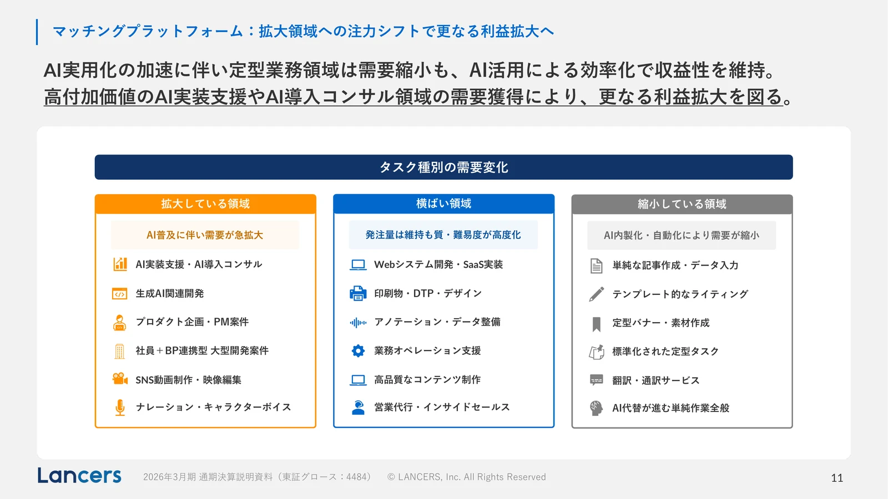
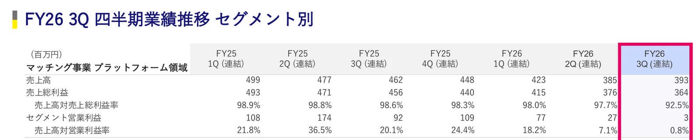
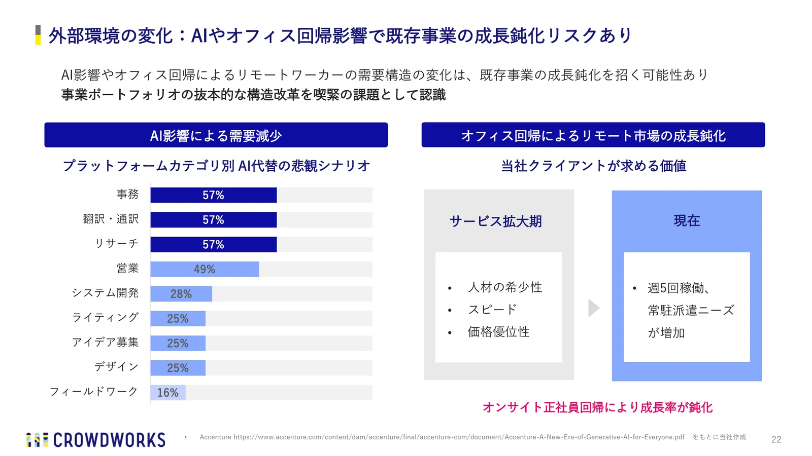
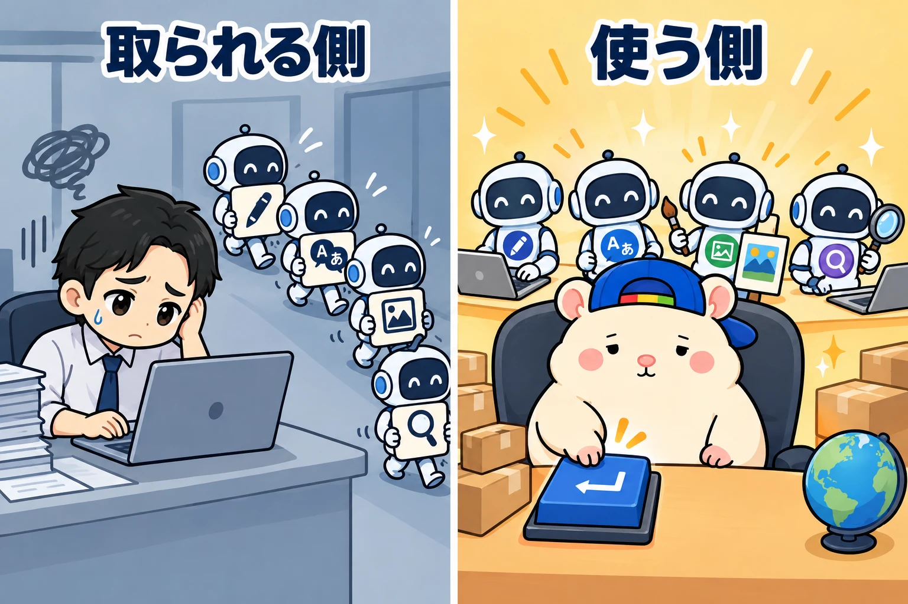

同じAIが、ある人には敵で、ある人には味方です。
フリーランスの仕事は、AIにどんどん取られています。
でも、ぼくの店では、そのAIが毎日はたらいています。
人間は、梱包発送担当さん1人だけです🐹
フリーランスになった人の多くは、会社を辞めたくて辞めた人だと思います。
だから、いま会社に戻る人も、戻りたくて戻るわけじゃない。
仕方なく、戻る。
いま、こんなニュースが流れています。
https://x.com/nikkei/status/2094742205231485029
フリーランスをすすめてきた発信者も、「もうおすすめしない」と書きました。
https://x.com/IHayato/status/2104374807693570542
会社員の人の中にも、それでも脱サラしたいと思っている人がいるはずです。
そういう人に、1つの方法を書きます。
AIを敵にしないで、味方にする商売。
eBay輸出です。
フリーランスの仕事が、AIに削られている
クラウドソーシング大手のランサーズが、2026年5月の決算資料に出した図です。

いちばん右の列が「縮小している領域」。
理由は「AI内製化・自動化により需要が縮小」と書かれています。
単純な記事作成・データ入力。
テンプレート的なライティング。
定型バナー・素材作成。
翻訳・通訳サービス。
フリーランスの入口だった仕事が、ほぼそのまま入っています。
もう1社、クラウドワークスの決算資料も見てみます。
仕事を頼みたい会社と、受けたい人をつなぐ「プラットフォーム領域」の数字です。

3か月ごとの売上高は、4億9,900万円から3億9,300万円へ。
1年半で、約2割減りました。
本業のもうけ(セグメント営業利益)は、1億800万円から300万円。
ほぼゼロです。
同じ資料で、クラウドワークス自身が「AI影響を受けているプラットフォーム事業」と書いています。
さらに、その前の決算資料には、こんな図がありました。

左は、仕事のカテゴリーごとに「AIに代わられるかもしれない割合」です。
悪いほうに転んだときの見込みですが、事務、翻訳・通訳、リサーチは57%。
右には「オンサイト正社員回帰により成長率が鈍化」。
仕事を仲介する会社自身が、フリーランスから会社員に戻る流れを、決算資料に書いているんです。
海外でも同じです。
ChatGPTが出てから8か月で、ライティングやコーディングの仕事の募集が21%減った、という研究があります。
画像を作るAIが出たあとは、画像制作の募集が17%減りました。
パソコン1台で完結する仕事ほど、AIが代わりにやれるようになりました。
その仕事で独立していた人ほど、波をまともにかぶっています。
同じAIが、使う側には味方になる

ここが、今日いちばん書きたいところです。
AIが翻訳できるようになった。
翻訳で食べていた人には、敵です。
でも、翻訳を頼む側には、24時間はたらく社員が来たのと同じです。
同じAIなのに、どこに立っているかで、意味がまるっと反対になります。
じつは、さっきのランサーズの図にも、同じことが書いてあります。
もう一度、いちばん左の列を見てください。
「拡大している領域」で、理由は「AI普及に伴い需要が急拡大」。
いちばん上にあるのは「AI実装支援・AI導入コンサル」です。
右の列は、AIに取られる仕事。
左の列は、AIを使う側の仕事。
同じ1枚の図の中で、減る仕事と増える仕事が、AIで分かれています。
フリーランスは、AIと同じ仕事を、同じお客さんに売る立場です。
だから、取り合いになる。
eBayの店長は、AIに仕事を頼む立場です。
AIがかしこくなるほど、社員がかしこくなる。
AIの進歩が、そのまま店の追い風になります。
うちの店は、人間1人
ぼくの店は、eBayで日本の商品を海外に売っています。
社員は20名。
人間は、梱包発送担当さん1人だけです。
フリーランスで減っている仕事と、うちの社員の担当を、比べてみます。
- ライティング → 出品担当。英語の商品タイトルと説明文を書く。多い日は400品近く出品
- 翻訳 → 顧客対応担当。海外のお客さんからの質問に、ていねいな英語で返事の下書きを作る
- 画像 → デザイン担当。お店の画像を作る
- 調べもの → リサーチ担当。売れる商品と相場を、24時間探し続ける
ほかにも、値付け担当、経理担当、在庫監視担当がいます。
フリーランスの人が「AIに取られた」と言っている仕事。
うちの店では、それが毎日の社員の仕事です。
じつは、うちの中の人は、前にもeBayをやっていました。
そのときは、人間の外注さん21名にお願いしていました。
雇って、教えて、管理して。
それだけで、けっこうな仕事でした。
いまは、その仕事をAIがやっています。
ぼくの仕事は、社員が作ったものを見て、Enterキーを押すことです。
人力をほとんど使わずに稼げる理由
eBayの仕事を分けると、こうなります。
リサーチ。
出品。
値付け。
在庫の見張り。
英語の顧客対応。
経理。
そして、梱包発送。
最後のひとつ以外、ぜんぶパソコンの中の仕事です。
つまり、ぜんぶAIの得意なこと。
体を使うのは梱包発送だけで、そこは人にお願いできます。
それに、eBayのお客さんは世界中にいます。
フリーランスは、取引先から仕事を頼まれるのを待つ商売。
eBayは、アメリカ、イギリス、ドイツ、オーストラリアのお客さんが、自分で店を見つけて買っていく商売です。
1社に頼まれるのを待たない。
AI社員が、寝ているあいだも出品して、見張って、返事の下書きを作る。
人の手をほとんど使わずに、世界に売れる。
これが、AIを味方にした商売の強さです。
いきなり大きくは稼げません
正直に書きます。
うちの店の1ヶ月目の利益は、10万4,286円でした。
いきなり、会社の給料を超えるような数字ではありません。
ただ、これはほぼAIだけで出した利益です。
eBayにも、こわいことはあります。
関税が変わる。
仕入れ元に断られる。
ルール違反で、出品が止まる。
うちの店も、ぜんぶ経験しました。
そのたびに台帳に書いて、社員といっしょに直しています。
だから、会社員のまま始めるのがいいと思います。
人の手をほとんど使わないので、会社員のままでも回せます。
もう1本の柱は、レンスペ
うちの中の人が会社を辞めたとき、やっていたのは2つでした。
eBayと、レンタルスペースです。
eBayは、AIを使って伸ばす商売。
レンタルスペースは、AIに代わりがきかない商売です。
部屋で踊るのも、集まるのも、人間だからです。
レンスペは、軌道に乗れば1部屋あたり1日0〜5分。
こっちも、人の手をほとんど使いません。
たとえば、レンスペ2部屋で月20万円。
eBayで月30万円。
あわせて月50万円、年収にすると600万円くらいです。
ここまで来ると、脱サラが現実に見えてきます。
取られる側から、使う側へ
フリーランスの仕事を続けるか。
会社に戻るか。
いまは、その2択で考える人が多いと思います。
でも、3つ目があります。
AIに仕事を取られる側から、AIに仕事を頼む側へ回ること。
立つ場所を変えるだけで、AIのニュースは、こわい話から追い風の話に変わります。
あなたはいま、AIを敵にしていますか? それとも、社員にしていますか?🐹
▶ AIに課金して、いくら稼ぎましたか?(内部リンク: 2026-08-26)

▶ 【eBay輸出】梱包以外ぜんぶAIでやる方法(8ステップで解説)(内部リンク: 2026-09-24)

▶ eBayと○○は、最強の組み合わせ(内部リンク: 2026-09-27)

▼中の人🏠(レンタルスペース23店舗・売上1.5億)のレンスペ実録

▼ブログ(eBay×レンスペ、全記事まとめ)

▼この店のやり方は、ぜんぶ1冊にまとめてあります
リサーチ・出品・値付け・顧客対応まで、初月利益10万4,286円を出した実店舗の記録と手順を全部書いた教科書です。
読んだその日から、AI社員の作り方をそのまま真似できます。
『AI × eBay輸出の教科書 — 梱包以外、ぜんぶAI』

販売価格は3部売れるごとに2,000円ずつ値上がりします（上限あり）。内容・最新価格は販売ページをご確認ください。